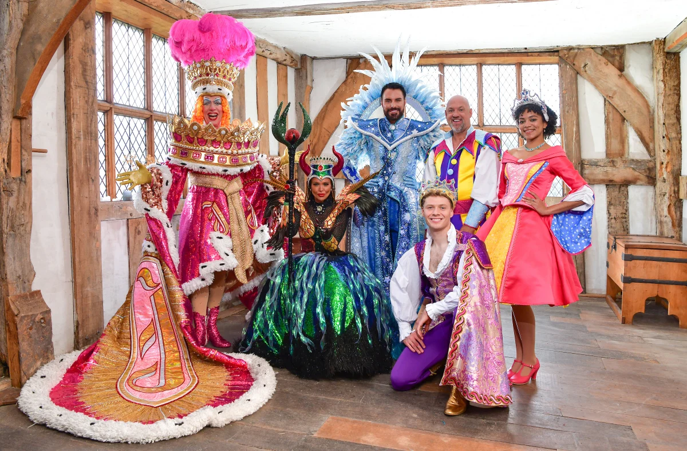

The magic of pantomime has officially arrived in Birmingham!
The star-studded cast of Sleeping Beauty recently came together for the official launch of Birmingham Hippodrome’s spectacular Christmas pantomime.
BAFTA award-winning TV presenter Rylan makes his Birmingham panto debut as the Diva of Dreams, joining Birmingham panto favourite Matt Slack as Lester the Jester, musical theatre star Zoe Birkett as the wicked Carabosse, and acclaimed pantomime dame Andrew Ryan as Queen Patsy of Pantoland!
Completing the magical line-up are rising musical theatre stars Ben Culleton as Prince Peter of Perry Barr and Keziah Ibe as Princess Aurora.
The full cast’s first get-together at the magnificent Middleton Hall offered a first glimpse at the characters and costumes that will bring this year’s spectacular production to life.
Produced by Crossroads Pantomimes, the world’s biggest pantomime producer, Sleeping Beauty promises a spectacular festive adventure, with lavish sets and costumes direct from The London Palladium, plus magic, music, comedy and dazzling special effects.
Don’t snooze on booking your seats for Birmingham’s biggest festive spectacular!
Key Accessible Performances & Highlights:
- BSL Interpreted: Sun 10 Jan (1pm & 5.15pm) – Interpreted by Rachel Tipping & Clare Edwards
- Captioned: Sun 17 Jan (1pm & 5.15pm)
- Audio Described: Wed 13 Jan (2pm) & Sat 16 Jan (2.30pm)
- Relaxed Performance: Thu 28 Jan (12:00 noon)